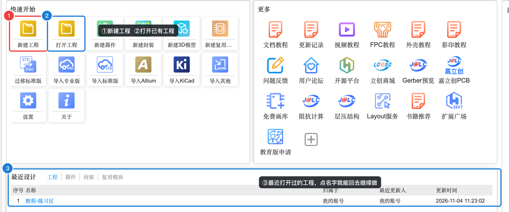
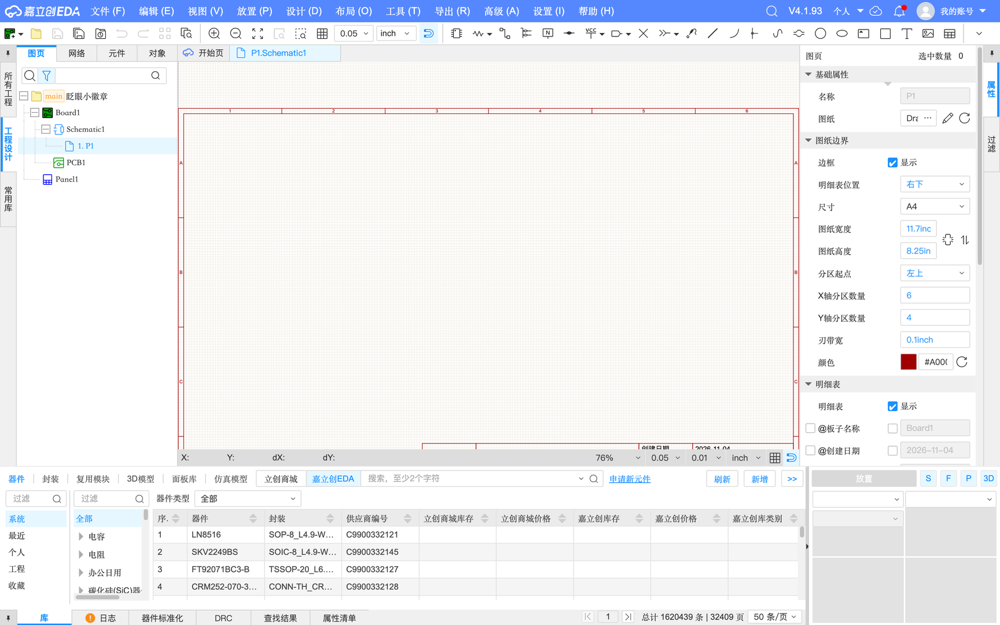
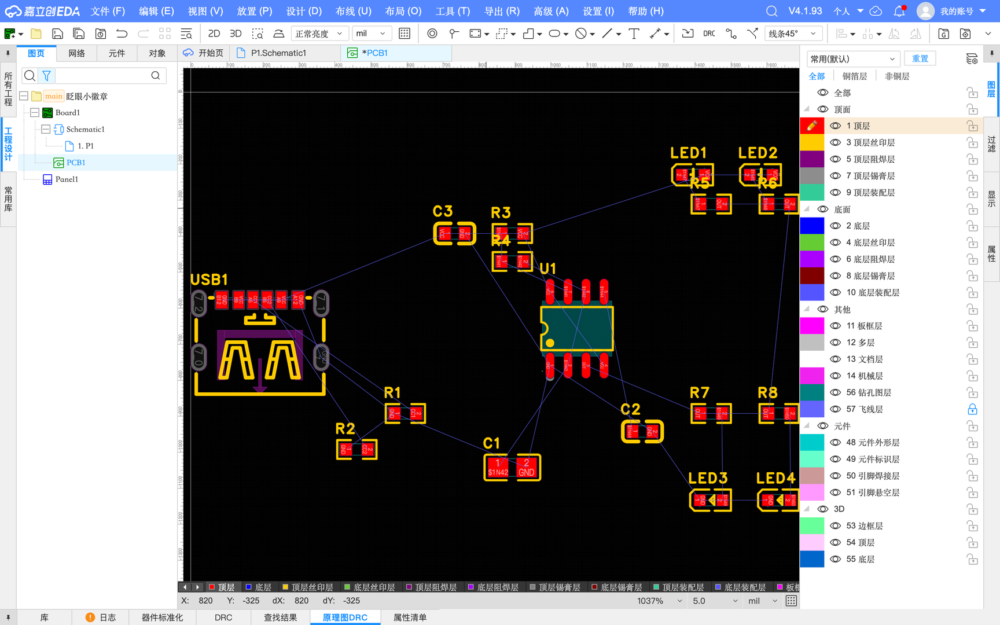
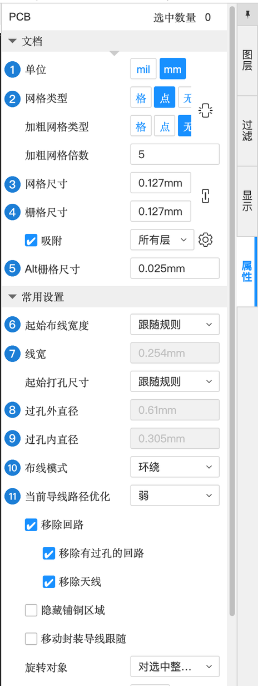

1.0 认识界面与基本操作
动手画图之前，先花 15 分钟认识一下编辑器的“地图”：菜单、工具栏、左右两侧的面板、底部面板和状态栏分别在哪、管什么。后面的案例里说“在右侧属性面板里改”“打开底部库面板”，你就知道该往哪看了。
首页：工程从这里开始#
登录后打开编辑器，第一个看到的是「开始页」（第 0 章 0.3 已经逐区讲过）。和做板子最相关的只有两块：

- 快速开始 → 新建工程 / 打开工程：每做一个新作品就新建一个工程（案例 A 的第一步，A-1 会详细演示）。
- 最近设计：最近打开过的工程，下次回来点名字就能接着做。
- 顶部的「工作区」可以在“个人”和“团队”之间切换，一个人学习用“个人”就行。
原理图编辑器的布局#
打开工程里的原理图，就进入了原理图编辑器。下面这张图是案例 A 画到一半时的真实界面，把鼠标移到带编号的区域上，看看每一块叫什么、干什么用：

记住一个大原则：左边找东西，中间画，右边改，底下查。
- 左边：工程树（打开哪个文件）、常用库（拖出常用元件）、网络/元件列表（找某个东西在哪）。
- 中间：画布。
- 右边：属性面板——选中什么就显示什么的参数，几乎所有修改都在这里完成。
- 底下：库（搜索元件）、DRC（检查结果）、日志（报错信息）。
PCB 编辑器的布局#
PCB 编辑器的整体结构和原理图一样，只是右侧面板多了「图层」，底部多了一条图层快捷栏，画布默认是黑色背景：

画布基本操作#
平移、缩放这些操作第 0 章已经讲过并且有模拟器可以练手，这里只做一个回顾。还没看过的一定先去 0.4 键盘、鼠标与快捷键，特别是触控板用户。
| 想做什么 | 鼠标 | 键盘 |
|---|---|---|
| 缩放 | 滚轮上下滚（以鼠标位置为中心） | — |
| 平移视野 | 按住右键或中键拖动 | — |
| 看全图（迷路时） | — | K 适应全部 |
| 选中一个对象 | 左键单击 | — |
| 框选多个对象 | 在空白处按住左键拖出一个框 | — |
| 取消当前操作 / 结束连续放置 | — | Esc |
| 撤销 / 重做 | — | ⌘Z / ⌘Y |
| 删除选中对象 | — | delete |
| 旋转（选中或放置时） | — | 空格（每按一次转 90°） |
| 左右 / 上下翻转 | — | X / Y |
| 移动选中对象 | 按住对象拖动 | M（按中心移动） |
| 保存 | — | ⌘S（保存全部） |
| 查找对象 | — | ⌘F |
面板的收起与展开#
屏幕不够大时，可以把暂时不用的面板收起来，给画布腾地方：
| 面板 | 快捷键 | 说明 |
|---|---|---|
| 左侧面板 | [ | 工程树、常用库 |
| 右侧面板 | ] | 属性、图层、过滤 |
| 底部面板 | \ | 库、日志、DRC。案例里经常要“打开底部库面板搜元件”，按一下 \ 就出来了，再按一下收回去 |
面板边上的竖排标签（比如右边的「属性 / 过滤」、左边的「工程设计 / 常用库」）点一下就能切换面板里显示的内容。
必要的设置：单位和网格#
嘉立创EDA 的原理图默认单位是 inch（英寸），PCB 默认是 mil（千分之一英寸）。原理图用什么单位无所谓（它只表达连接关系）；但 PCB 里要输入板子尺寸、坐标，本教程统一用 mm（毫米），和尺子、和下单页面的单位一致。
改 PCB 单位最快的方法：点状态栏右侧的单位，在弹出的下拉里选 mm（快捷键 Q 可以在几种单位之间循环切换）：

在 PCB 里什么都不选时，右侧属性面板显示的是整个 PCB 文档的设置，单位、网格也能在这里改：

| 编号 | 设置 | 含义（大白话） | 建议 |
|---|---|---|---|
| 1 | 单位 | mil 或 mm | mm |
| 2 | 网格类型 | 画布背景是“格子线”还是“点” | 随意 |
| 3 | 网格尺寸 | 背景格子的大小 | 默认 0.127 mm 即可 |
| 4 | 栅格尺寸 | 移动/画线时“吸附”的步长：东西只会落在这个步长的整数倍上 | 默认 |
| 5 | Alt 栅格尺寸 | 按住 ⌥ 时用的更细的步长，用来微调 | 默认 |
| 6 | 起始布线宽度 | 画导线时默认用多宽：“跟随规则”= 用设计规则里的默认线宽 | 跟随规则 |
| 7 | 线宽 | 当前导线宽度（跟随规则时为 0.254 mm） | 默认 |
| 8 | 起始打孔尺寸 | 放过孔时默认用多大 | 跟随规则 |
| 9 | 过孔外直径 | 过孔外圈大小（0.61 mm） | 默认 |
| 10 | 过孔内直径 | 过孔钻孔大小（0.305 mm） | 默认 |
| 11 | 布线模式 | 画线遇到障碍物时：“环绕”= 自动绕开 | 默认 |
本节检查清单#
- 能说出原理图编辑器的 6 大区域：菜单栏、工具栏、左侧面板、画布、右侧属性面板、底部面板（外加状态栏）
- 知道“选中什么，右侧属性面板就显示什么”
- 知道底部库面板用 \ 打开 / 收起
- 知道 PCB 状态栏可以把单位切成 mm
- 迷路按 K，后悔按 ⌘Z，随手 ⌘S
认识完界面，开始做第一个作品吧 👉 案例 A：眨眼小徽章。